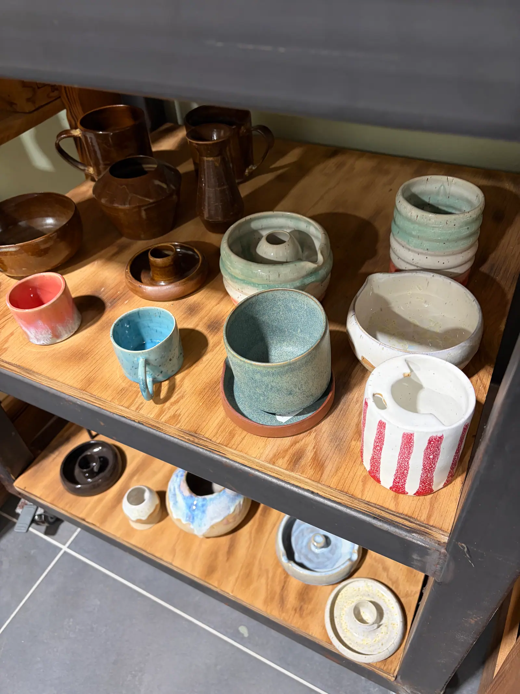

Handgemacht mit Herz
Besondere Geschenkideen & Wohndeko
Du suchst ein ganz besonderes Geschenk zum Geburtstag, zur Hochzeit oder einfach für dich selbst? In unserem kleinen Studio-Shop in Schechen findest du eine wechselnde Auswahl an handgedrehten Tassen, eleganten Vasen, Schüsseln, Seifenschalen und handbemalter Deko.
Alle Stücke sind aus hochwertigem Steinzeugton gefertigt, bei hohen Temperaturen spülmaschinenfest gebrannt und zeichnen sich durch angenehme Haptik und wunderschöne Glasuren aus.
100% handgemacht in unserer Region
Lebensmittelecht, mikrowellengeeignet & spülmaschinenfest
Gutscheine direkt vor Ort oder online erhältlich

🎁 Schenke gemeinsame Zeit & Kreativität
Unsere Gutscheine können flexibel für Keramik bemalen, Töpferkurse oder handgemachte Keramik aus dem Shop eingelöst werden.
Gutschein anfragen & abholen